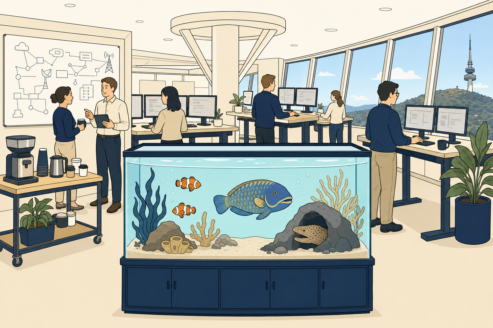
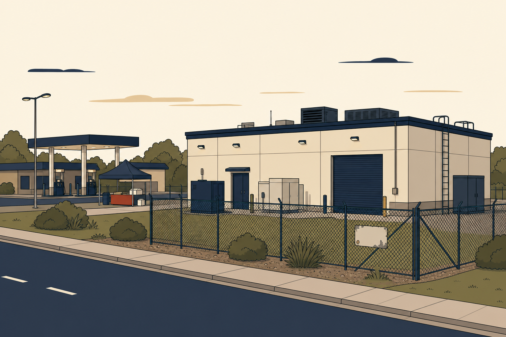
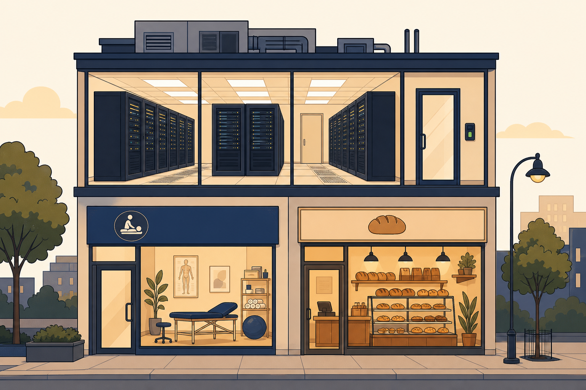
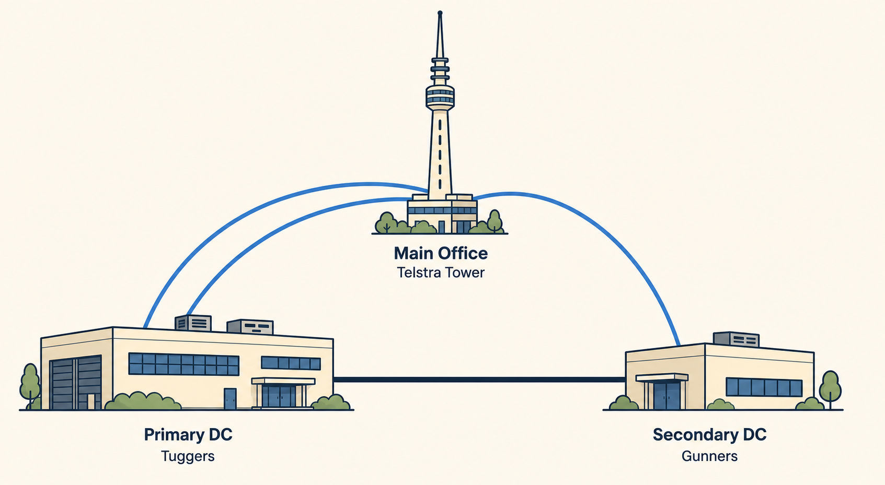
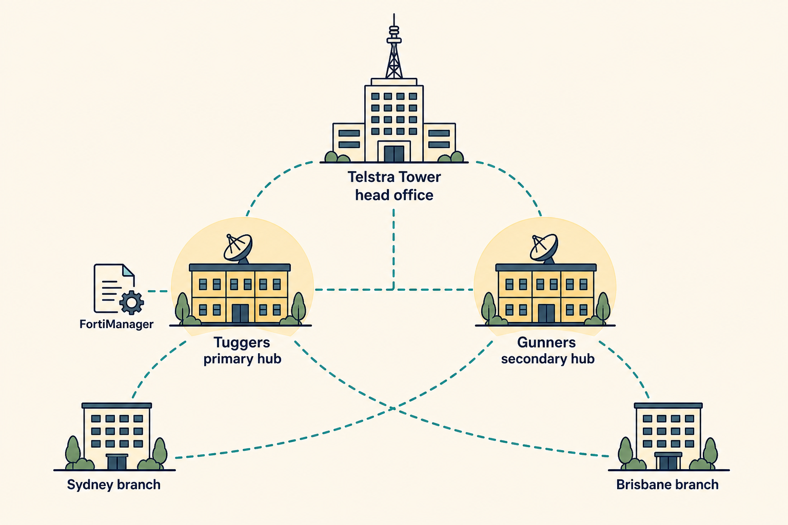
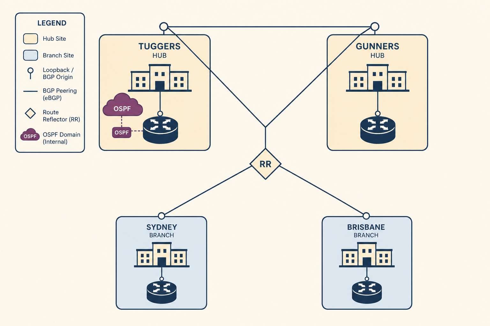
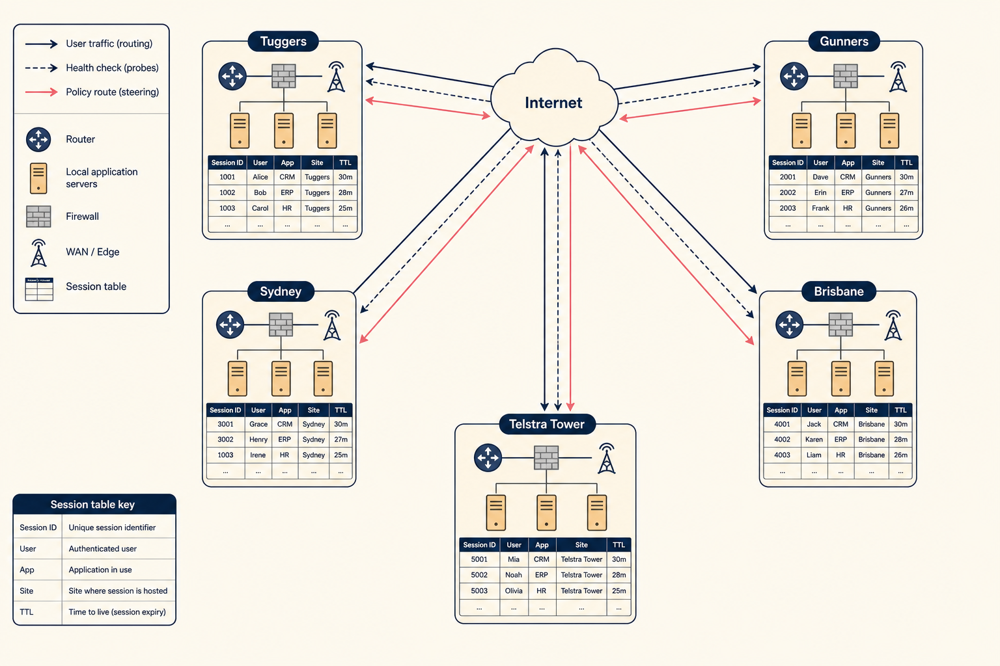
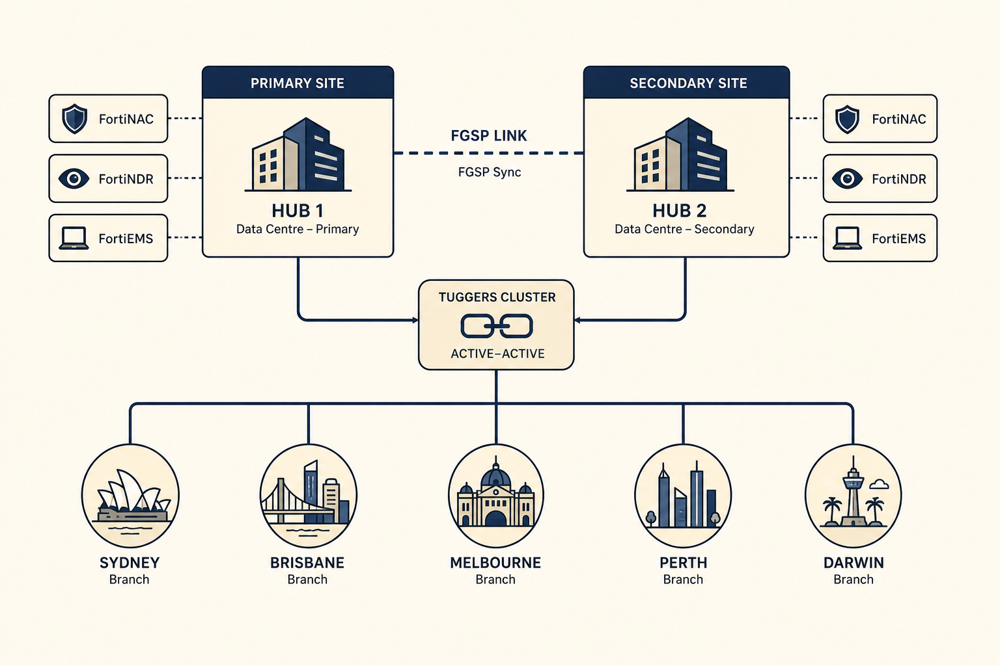
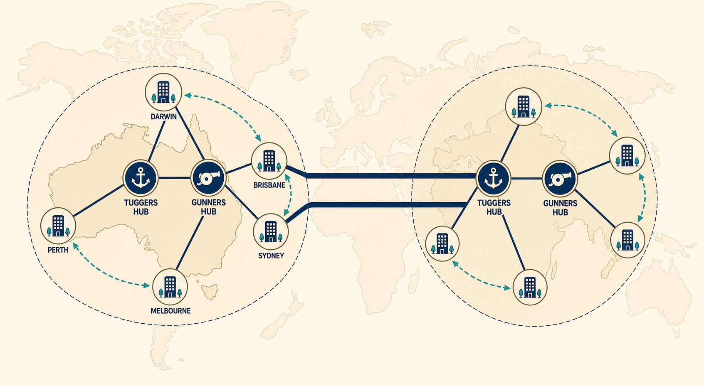

What the Department does
On paper it’s clear. In practice, the Department has quietly absorbed the workload of three defunct agencies and half of Environment’s water team.
The Department of Fish administers the Fisheries and Aquatic Resources Act, the Freshwater Licensing Framework, and — through a Machinery of Government change nobody remembers requesting — the National Coastal Advisory Council. It also produces the quarterly State of the Snapper report, which is tabled in Parliament, cited by nobody, and downloaded exactly once per quarter by a bot in Slovakia.
Its real work happens between the lines: licensing appeals, incident coordination when a fishing trawler wanders into a shipping lane, evidence for royal commissions that never quite happen, and an increasingly awkward number of FOI requests about seagulls.
Telstra Tower, Canberra
Floors 8, 9, and part of 11. Nobody has ever explained what happens on the rest of 11.

images/prompts.txt.Telstra Tower · Levels 8, 9, part of 11
The Department’s executives sit on Level 9, alongside the fish tank. The Network and Security Operations desks are on Level 8, close enough to hear the tank’s filter but not close enough to smell it. Part of Level 11 is used for “training,” which is Departmental for “where we put the printers.”
Resilient connectivity runs to both Tuggers and Gunners; a small procurement dispute in 2023 means one of those links is technically still owned by the National Coastal Advisory Council, and no one is entirely sure what happens if they ask for it back.
Approximately 2,400 L of saltwater and one silent judgement
Installed during the 2019 refit at a cost that appears on no line item and has never been questioned. It contains a small reef community, two clownfish (Powell and Nixon), an unreasonably large wrasse (“Barry the Second”), and a moray eel that only appears during executive meetings.
The tank is maintained by Barry — Barry the First, not the eel — who arrives every Tuesday at 06:00 and departs before anyone can talk to him. During major incidents, staff instinctively gather around the tank. Nobody has ever explained why. Dr Finch has been observed taking a full lap of it before signing anything.
- Approximately 140 users at project start; grows to ~1,100 by the end of Season 6
- Two independent WAN carriers plus a fibre run to Tuggers and a diverse path to Gunners
- Executive floor, SOC, and Network Operations all in one building — convenient for incidents, inconvenient for lunch
- The lift on the west side has been “out of service” since Q3 2022
Tuggers — Tuggeranong
A concrete rectangle behind a car park behind a service station. Runs everything.

images/prompts.txt.Tuggers · DC1
A single-storey concrete building on a suburban business estate in Tuggeranong. Its roller door is unmarked. Its official name is the Fisheries Data Facility, which appears nowhere on the exterior signage and is only invoked when Facilities need to justify the water bill.
Tuggers runs the FortiGate HA cluster, FortiManager, FortiAnalyzer, the two initial WAN circuits, and the production Fisheries systems. There is one meeting room, which is used as a coat cupboard. There is one kitchen, which contains a Nespresso machine no one is allowed to touch.
- FortiGate HA cluster (active–passive at start; evolves to active–active by Season 5)
- FortiManager and FortiAnalyzer
- Two initial WAN circuits; a third arrives in Season 2
- Becomes the primary SD-WAN hub in Season 2; retains the role after dual-hub conversion
- Currently home to seventeen “temporary” label maker cartridges dating back to 2017
Gunners — Gungahlin
A rebadged co-location suite on the top floor of a mixed-use building above a physiotherapist.

images/prompts.txt.Gunners · DC2
Gunners occupies a co-location suite on the top floor of a mixed-use building in Gungahlin. Below it: a physiotherapy clinic, a bulk-billing GP, and a bakery that Racks visits so often he has a house account. The suite is neat, cold, and slightly too well-lit — the previous tenant was a cryptocurrency firm and left the lighting rig behind.
Gunners hosts a matching FortiGate HA pair, replication for the Fisheries systems, and a small FortiAnalyzer collector. It has one WAN circuit at project start and a diverse fibre path back to Tuggers. In Season 2 it takes on the secondary SD-WAN hub role. Its power comes from two feeds, one of which shares a substation with a nearby nightclub, a fact nobody discovered until December 2023.
- Second FortiGate HA cluster and a matching FortiAnalyzer collector
- Fibre path to Tuggers; a diverse metro path arrives in Season 2
- Becomes the secondary SD-WAN hub in Season 2 (EP-12)
- Serves as the primary failover target in Season 4 and Season 5
- Card access is temperamental if you’re holding a coffee
The starting topology
One office. Two data centres. A basic SD-WAN nobody quite designed — it just accreted.
At project start, the network is small, functional, and not standardised for scale. The main office at Telstra Tower has resilient connectivity to both Tuggers and Gunners. Tuggers holds the FortiGate HA cluster, FortiManager, FortiAnalyzer, and both initial WAN circuits. Gunners mirrors it on a smaller scale. SD-WAN is deployed at Tuggers but consists of two members, a couple of ill-considered rules, and a health check that pings google.com because someone once read a forum post.
Nothing is broken. Nothing is properly built either. Samwise’s job across six seasons is to turn a network that works into a network that can be reasoned about.
Growth by season
Six stages, roughly one per season. Nothing is added silently; every change is recorded in the Architecture Decision Register (a Word document Mel refuses to abandon).

SD-WAN is properly configured at Tuggers: named zones, deliberate rules, real health checks. The office and Gunners keep working. Nothing has been added — the network has just started making sense.

Sydney and Brisbane come online. ZTP does the heavy lifting; FortiManager, metadata variables, and template groups do the tidying. Tuggers becomes the primary SD-WAN hub, Gunners the secondary. The Department is now a small national network.

The overlay meets the estate’s legacy OSPF, and BGP grows up. Loopback-sourced peering, neighbour groups, BFD, and controlled redistribution turn a network into something that converges predictably.

Routing works. Sessions don’t. Policy-route order, dirty sessions, SNAT, local-out, and application steering all become visible. No new sites are added; the topology stays the same. The complexity is happening inside the FortiGates.

Melbourne, Perth, and Darwin arrive. FortiNAC, FortiNDR, SAML SSO, and automation stitches join the estate. HA moves to active–active where it earns its keep; FGSP appears for asymmetric edges.

The Department goes global. A first international region appears with its own dual hubs. ADVPN 1.0 evolves to 2.0. BGP self-healing, dependent shortcuts, and offload become architecture concerns rather than one-off tweaks. Samwise presents the finished design as the Department’s secure networking architect.
How the story uses the world
The story doesn’t just decorate the technical content. It generates it.
Every episode begins inside the Department: a licensing outage, a Deputy Secretary’s pointed question, a Gunners power event that turns out to be nightclub-adjacent, a Sydney branch that arrives online with three unexplained VLANs. The problem creates the technology, not the other way around.
Nothing is added to the topology silently. When a new site, link, appliance, or protocol appears, it is recorded in agency.txt and cross-referenced in the Architecture Decision Register. This is Mel’s doing, and Mel does not compromise on this. Ever.